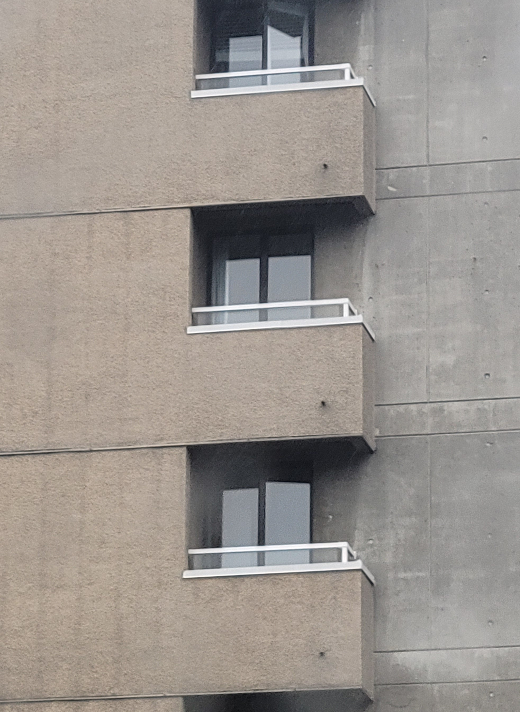
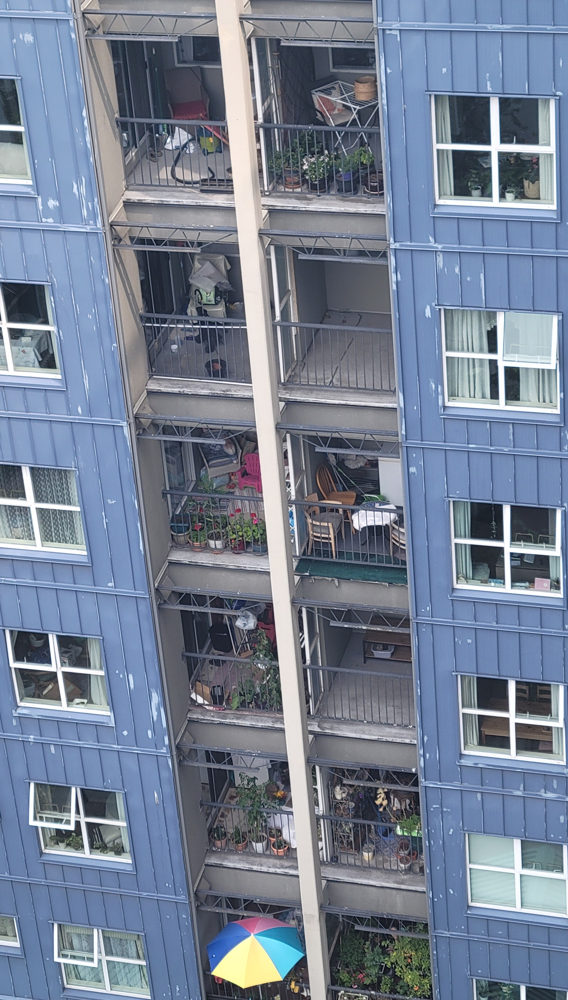
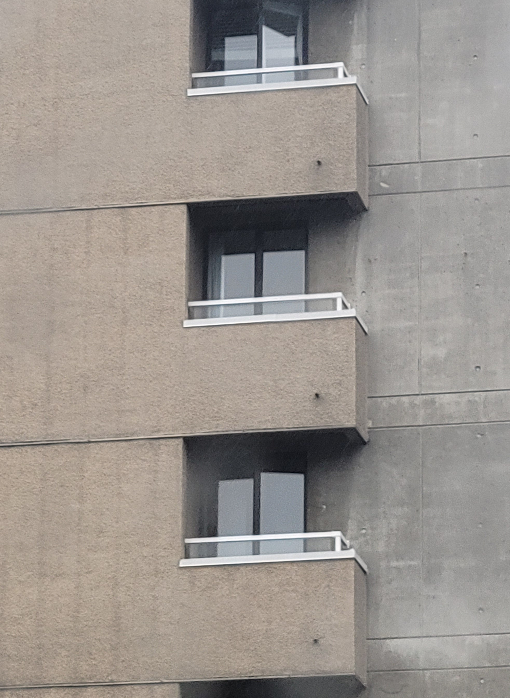
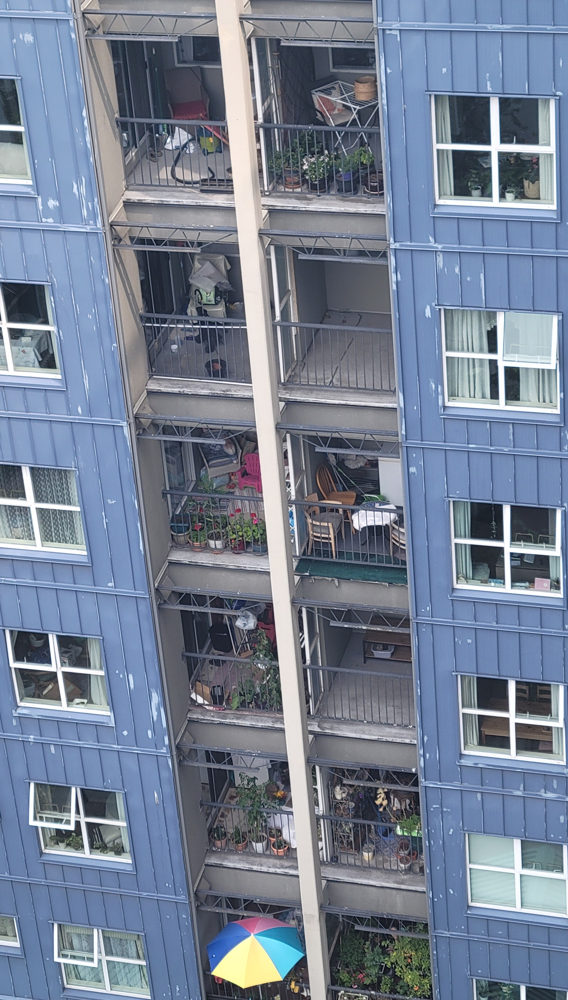

GRANVILLE BRIDGE
Pressing my chest against the Granville Bridge I feel at once its trembling vibration and my own heart’s rapid beating. I embody a sonic superposition: vibrational waves overlap; interfere; combine. The rhythm of their resulting wave marks a pattern of interference, also called a diffraction pattern. Through visceral encounter, I become entangled with the infrastructure which, heretofore, I had approached only as an instrument from whose abstracting vantage I could conduct rhythmanalysis of the field below.
begin-from-bottom
to enlarge individual image for viewing, right click and "open image in new tab"
also lions gate (water processing views), burrard, cambie, ironworker - why i like granville etc.
de Certeau, Michel. The Practice of Everyday Life. Translated by Steven Rendall. Berkeley: University of California Press, 1984.
about as seen from the window/balcony - rhythmanalysis and balcony imaginaries
In January 2023 I first became aware of the Amazon Van’s backup sound. It’s unlike any vehicle beepI’ve ever heard. Short and aggressive, it's like the grunt of a rooting pig. It’s so distinctive that no matter how far away the van and faint the sound, my ears will sense it and immediately associate sound to source. I involuntarily think of Amazon like 6 times a day now.
maybe about other sounds - rhythms - that are intermittent even but commonplace. how sirens faded for a while and i realized it was because of construction.
add other signs (city and drift)
SIGNS OF PROTEST
Deep mapping (including practicing rhythmanalysis and reading Karen Barad through my praxis) has honed my ability to recognize patterns of similarity and difference, or marks of interference. Lately I’ve been lured by the drift of sticker-signs and graffiti-tags around the city. Among other variously elusive signs, I've been tracing these `15 minute City Ready` stickers that I began noticing in March around the Vancouver greenway, a stretch of old railroad converted into a designated bike path. Over the course of the spring more stickers appeared, pasted over DO NOT ENTER EXCEPT BICYCLES signs and those yellow/black striped hazard markers. At the same time as the stickers began proliferating east, west, and even across the bridge into downtown, they also began being scratched off. Reapplication, however, was swift. Then I sighted something different: at first one then two sites, scrawled in blue sharpie over `15 minute City Ready` was the declaration RESIST.
[photo evidence captured between march and august 2023 on cellphone by Q, ordered chronologically]
But resist what? The `15 minute City Ready` stickers are actually in protest of the ‘15 minute city’––the decal’s chain-link background representing enforced limited mobility. The location and surface of the stickers placement is therefore significant to making matter the intended message. The signification of protest comes to matter through the stickers’ material-semiotic interference with (infrastructural) boundary demarcations. City signs become palimpsests––sites of super/im/position signaling contested urbanisms.
These questions are the beginning of something. Although they require iterative re-writing I include them here to mark the opening of an ongoing inquiry. A related set of questions that was inspired by my navigations and encounters with `15 minute City Ready` emerged while thinking through diffractive mapping spatial analysis. How are empirics made legible as data by the apparatuses that produce them? How are technoscientific and affective orientations to ‘what counts as data’ co-constitutive of an empirical account of the city?
just before sundown every evening thousands of crows fly back across vancouver to the neighboring city of burnaby where they roost around an office park, macdonalds, costco, and train tracks. they started doing this in the 70s.
monday night runners
writelab
haha art and science thing
yukon
broadway city hall detour maps
before presentation at aag
intersections of planes, of epistemiologies, of life things, of the two motions of a leminscate intersecting in the middle
Notes on rhythm and intersecting planes which came to me while sitting listening to live jazz in an open
studio one saturday with my friend.
Thinking about rhythmanalysis before I'd even heard of the book.


.jpg)


 


